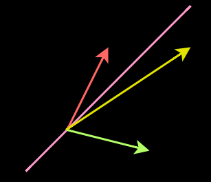

The span of a vector is a line passing through the origin of a coordinate system and the end or tip of the vector. The pink line in the above image is the span of the yellow vector.

The yellow vector gets knocked off its original span (pink line) after a linear transformation of the coordinate system.
Normally, vectors get knocked off (rotated by some amount from) their original span under the influence of a linear transformation as shown above.